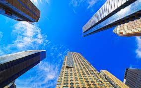
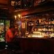

Passear na avenida Paulsita!

Um dos principais centros finaceiros da cidade, a avenida Paulista tambem possui diversas opções de entretenimento. Endereço do Museu de Arte de São Paulo, MASP, do Teatro Gazeta e muitos outros, a região é de dificil acesso graças as diversas linhas de ônibus que cruzam a avenida e a linha de metrô que passa por baixo dela
A Avenida Paulista sempre é assunto. O que será que estão falando a respeito no Twitter
Os bares da vida Madalena

Depois de um dia de trabalho, nada melhor do que um bom chopp, um petisco e uma conversa em uma mesa de bar. Opções de sobra na região das ruas Aspicuelta, Fradique Coutinho e Wisard.